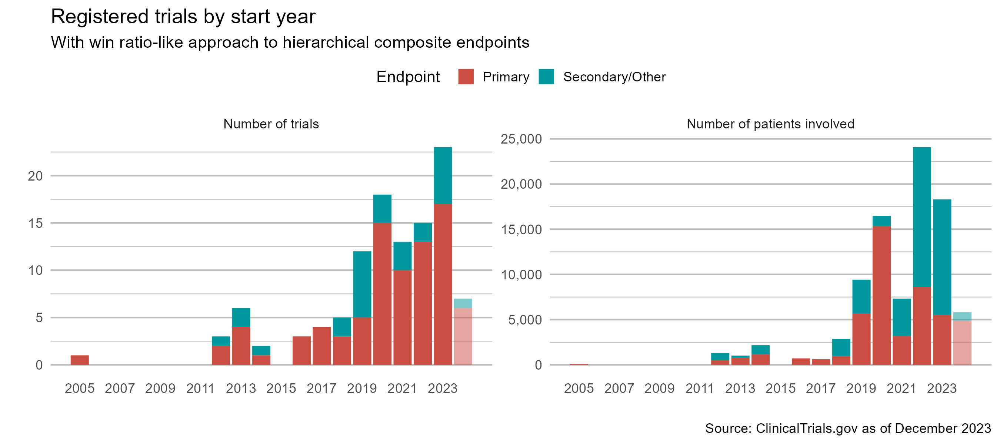

# install packages --------------------------------
install.packages("Wcompo")
install.packages("WR")
install.packages("rmt")
install.packages("WA")
# load packages -----------------------------------
library(tidyverse)
library(survival)
library(Wcompo)
library(WR)
library(rmt)
library(WA)Statistical Methods for Composite Endpoints
Win Ratio and Beyond
Course Info
This is a companion site for the same-titled workshop for the 44th annual Applied Statistics Workshop hosted by the Southern California Chapter of the ASA.
Time and Place
- Friday, April 25 · 9am - 4pm PDT
- Platt Conference Center, Cooper Auditorium, at City of Hope, 1500 East Duarte Road Duarte, CA 91010
Instructor Profile
Lu Mao, PhD
- Associate Professor of Biostatistics at UW-Madison
- Methodologic research
- R01HL149875: Novel Statistical Methods for Complex Time-to-Event Data in Cardiovascular Clinical Trials (12/01/2019 – 07/31/2028)
- DMS2015526: Randomized Trials with Non-Compliance (07/01/2020 – 06/30/2024)
- Collaborative research
- Cardiovascular disease, cancer, radiology, behavioral health interventions
- Teaching
- Survival Analysis: Theory and Methods (UW; 2020 - 2024)
- Editorial service
- Statistical Editor, JACC Journals
- Associate Editor, Statistics for Biopharmaceutical Research
Learning Outcomes
- Understand the statistical and scientific challenges with composite endpoints as well as regulatory guidelines/requirements
- Learn the basics of statistical methodology, e.g., testing, power analysis, nonparametric estimation, and semiparametric regression to address these challenges
- Get hands-on experience with real data using publicly available R-packages
Syllabus
- 1. Introduction (30 min)
- 1.1 Examples & guidelines
- 1.2 Traditional methods and limitations
- 1.3 Win ratio methods and limitations
- 2. Hypothesis Testing (40 min)
- 3. Nonparametric Estimation (60 min)
- 4. Semiparametric Regression (30 min)
- 5. Discussions (20 min)
- 5.1. Open problems
- 5.1.1 Covariate adjustment
- 5.1.2 Interim monitoring
- 5.1.3 Meta analysis
- 5.2. Course summary
- 5.1. Open problems
R-Packages
To proceed, install/load the following packages:
